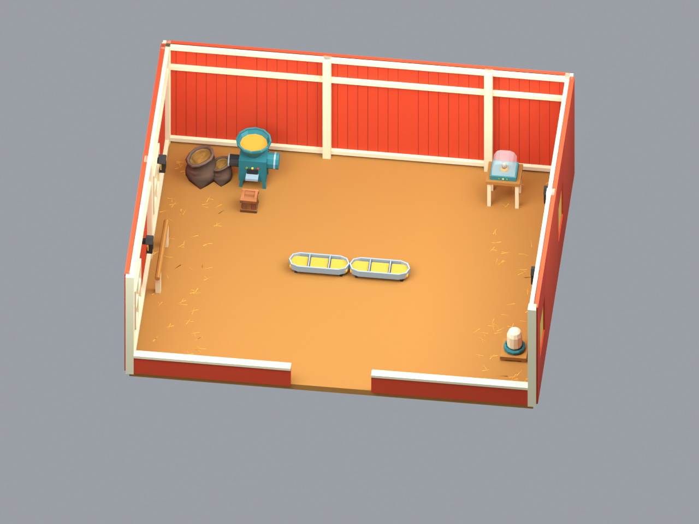
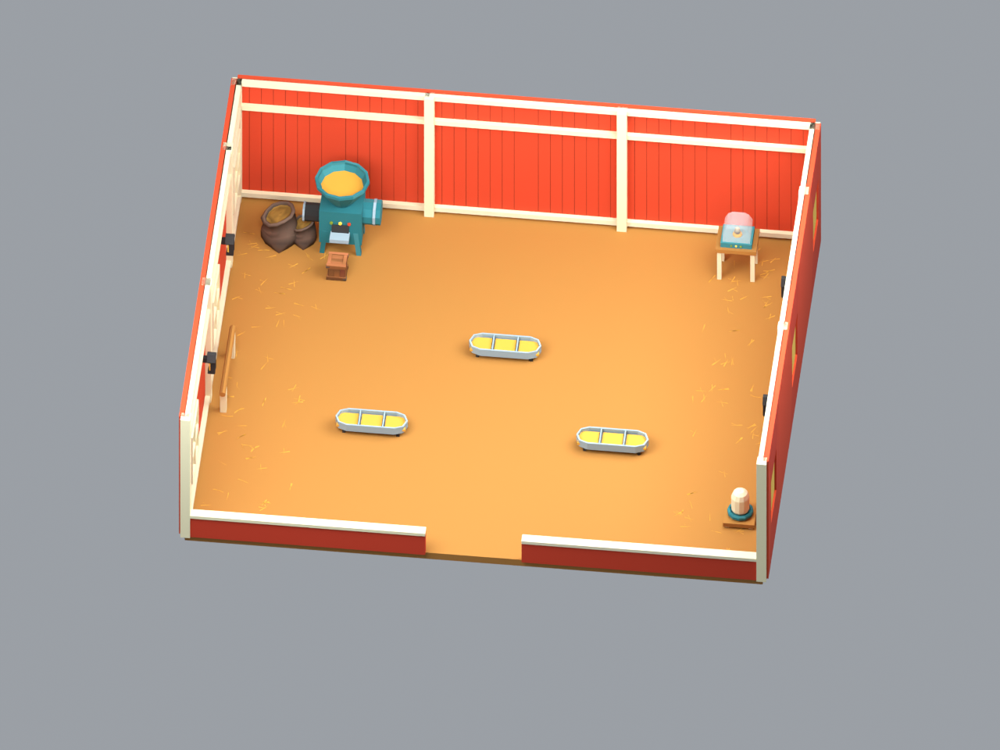
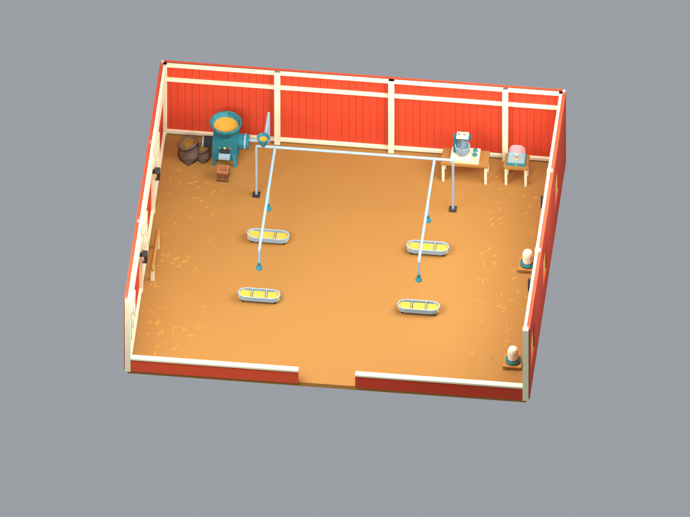
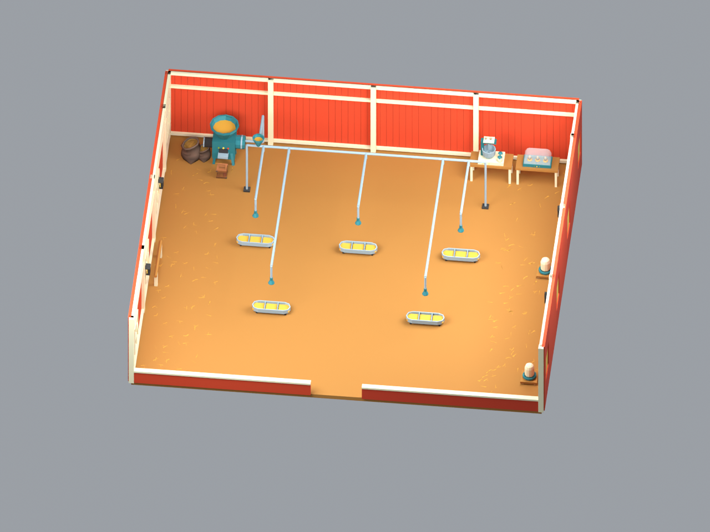
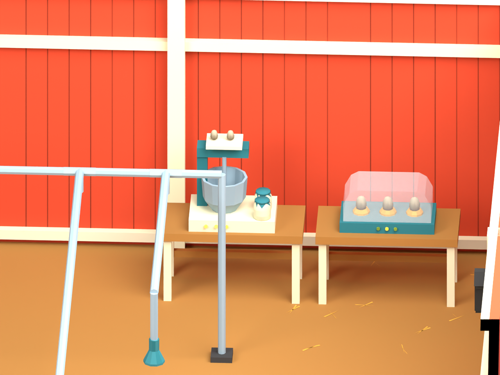
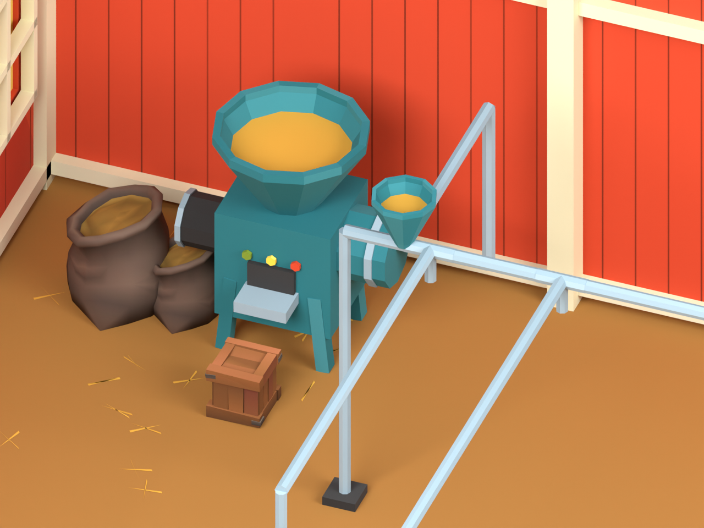

Coop Interior A · Blender model review
6 / 9 / 12 / 15 capacity · Existing Toonpack atlas · No animals · Source topology audit PASS

Level 1 · 6 ayam · 4,654 triangles · 1 egg incubator, small feed maker, 2 × 3-slot troughs

Level 2 · 9 ayam · 5,270 triangles · large feed maker, 3 troughs

Level 3 · 12 ayam · 8,218 triangles · mayonnaise mixer, 4 auto heads / troughs

Level 4 · 15 ayam · 9,726 triangles · 3 egg incubator, 5 auto heads / troughs

Mayonnaise mixer and three-egg incubator · Blender glass preview; native Unity material check pending

Feed maker, sacks/crate, feed supply connection · simple fill geometry
Counts include repeated source meshes and all room geometry, exclude animals and preview lights/camera. Native Unity vertices/renderers and phone performance require integration checks. Model notes · Topology audit · Mesh manifest